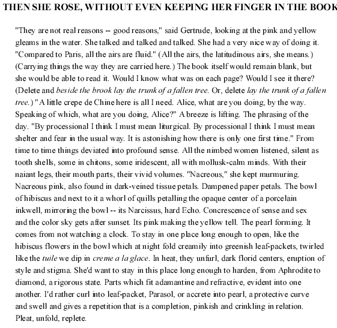

(Photo
by
Nancy Lee Russell)
DALE
GOING
Henry James' Gertrude, Gertrudes Alice's Gertrude, my (inner) Alice and Gertrude. Written under the influence of vacation novel reading (in the Caribbean) and the mysterious processes of novelists (at an artists colony)the luxurious necessity of such concentrated time. I've been musing on the sensuous pleasures of writing acts and how they alter/altar time. The postcard I found of a 19th century penmanship study: "Each moment spend to some good end," written over and over, Steinian (each moment/writing/reading inherently different) and Alician (the scribal repetition of someone elses words -- a pleasure and accretion even in that -- a reading.) Each moment spent writing, "Each moment spend to some good end," is. Encoded in this paean to product is a paean to process (the pleasures of process). The concrescent threads in Gertrude/Alice of concentrative art work (cubist rigors of exactitude, a density and compression) and meditative art work (repetitive as domestic chores, "to some good end," allowing the mind to wander, flow and flower).

NOTE: The poem's title, "They are not real reasons -- good reasons. . . gleams in the water," "and beside the brook lay the trunk of a fallen tree" are from Henry James, The Europeans. "From time to time things deviated into profound sense" is from Laurence Durrell, Monsieur.
BIO: Dale Going prints letterpress editions of innovative poetry by women at Em Press in Mill Valley, California and teaches a workshop, "Chapbooks for Poets," at the San Francisco Center for the Book. A chapbook, &O, will be published this fall in the Em Press Poetry Pamphlet Series. Her collection, The View They Arrange, Kelsey St. Press, was a finalist for the Poets' Prize.